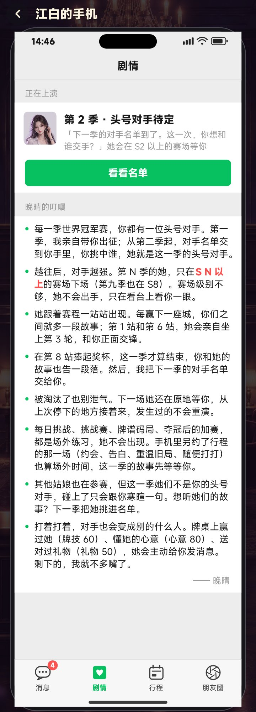
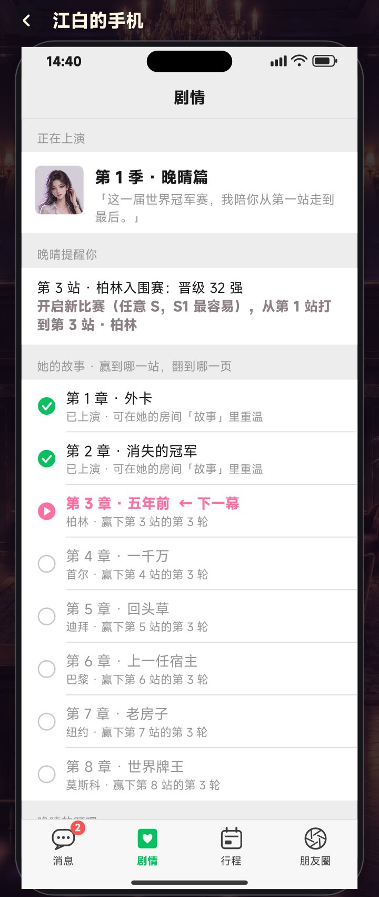
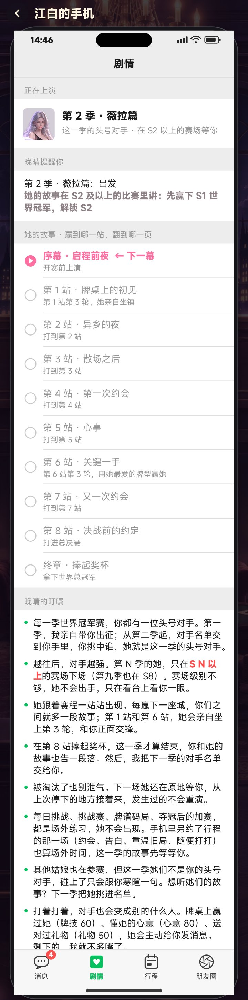

剧情触发：手机新增「剧情」页 + 没选女主时的引导
11-14 · 截图都是游戏本体实机渲染 · 还没有提交审核，等你确认
设定：每一季世界冠军赛，都有一位「头号对手」
手机「剧情」页 ·「晚晴的叮嘱」，落款「—— 晚晴」
- 每一季世界冠军赛，你都有一位头号对手。第一季，我亲自带你出征；从第二季起，对手名单交到你手里，你挑中谁，她就是这一季的头号对手。
- 越往后，对手越强。第 N 季的她，只在 S N 以上的赛场下场（第九季也在 S8）。赛场级别不够，她不会出手，只在看台上看你一眼。
- 她跟着赛程一站站出现。每赢下一座城，你们之间就多一段故事；第 1 站和第 6 站，她会亲自坐上第 3 轮，和你正面交锋。
- 在第 8 站捧起奖杯，这一季才算结束，你和她的故事也告一段落。然后，我把下一季的对手名单交给你。
- 被淘汰了也别泄气。下一场她还在原地等你，从上次停下的地方接着来，发生过的不会重演。
- 每日挑战、挑战赛、牌谱码局、夺冠后的加赛，都是场外练习，她不会出现。手机里另约了行程的那一场（约会、告白、重温旧局、随便打打）也算场外时间，这一季的故事先等等你。
- 其他姑娘也在参赛，但这一季她们不是你的头号对手，碰上了只会跟你寒暄一句。想听她们的故事？下一季把她挑进名单。
- 打着打着，对手也会变成别的什么人。牌桌上赢过她（牌技 60）、懂她的心意（心意 80）、送对过礼物（礼物 50），她会主动给你发消息。剩下的，我就不多嘴了。
故事进度：按章节名列出，不再是规则条目
- 晚晴篇用剧本里的章名：第 1 章 · 外卡、第 2 章 · 消失的冠军、第 3 章 · 五年前……每章下面一行小字写在哪座城、赢哪一轮
- 女主篇用场景名：序幕 · 启程前夜 → 第 1 站 · 牌桌上的初见 → 第 2 站 · 异乡的夜 → 第 3 站 · 散场之后 → 第 4 站 · 第一次约会 → 第 5 站 · 心事 → 第 6 站 · 关键一手 → 第 7 站 · 又一次约会 → 第 8 站 · 决战前的约定 → 终章 · 捧起奖杯
- 已经看过的章节标「已上演 · 可在她的房间「故事」里重温」，下一章标「← 下一幕」
同一设定下的其他文字
- 大厅目标栏：「第 2 季：挑选你的头号对手」「点这里看看对手名单；她会在 S2 以上的赛场等你」
- 还没选：「第 2 季 · 头号对手待定」「下一季的对手名单到了。这一次，你想和谁交手？」，按钮「看看名单」
- 选人弹窗：「第 2 季 · 你的头号对手」「晚晴把下一季的对手名单递给你：这一次，你想和谁交手？」「挑中谁，她就是这一季的头号对手」
- 选完：「第 2 季头号对手：薇拉。去 S2 以上的赛场见她」；进行中卡片：「这一季的头号对手 · 在 S2 以上的赛场等你」
什么时候会提示选人
- 每次启动游戏进大厅，自动弹出对手名单（有别的弹窗就等它关掉）
- 点「开启新比赛」时先弹一次；选好后自动把 S 调到她的赛场
- 手机亮红点；点大厅底部的目标栏也能直接打开名单


